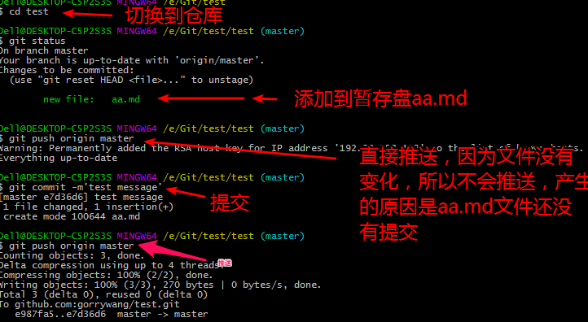

任务：使用远程仓库
目标：能够掌握生成ssh密钥以及同步远程仓库
每一年每一天我们都在进步
首先我们需要在Github上注册账号，不在赘述。
进阶部分
SSH是一种网络协议，用于计算机之间的加密登录。目前 是每一台Linux电脑的标配。而大多数Git服务器都会选择使用SSH公钥来进行授权，所以想要在GitHub提交代码的第一步就是要先添加SSH key配置。
添加SSH key
第一步:检查是否存在SSH
首先检查我们的机器中是否安装了SSH，Linux合Mac自带SSH，然Win系统只要装了Git就有SSH，我们可以 在Git Bash 中输入ssh检查一下是否安装了SSH,出下下图就代表已经存在了。

第二步:生成SSH密钥
打开我们的 Git Bash , 输入ssh-keygen -t rsa ,连续按下三个回车就会生成密钥。

会生成两个文件id_rsa和id_rsa.pub:
Linux/Mac系统在 ~/.ssh下
win系统在 /c/User/username/.ssh下

我们用记事本打开id_rsa.pub文件，将里面的内容复制到剪贴板。
第三步:GitHub上添加SSH key
登陆我们的Github账号，进入设置项。

然后在左侧栏点击SSH and GPG keys ,然后点击右上角New SSH key ,就会可以添加公钥。

将剪贴板里的内容添加到key里面，然后保存就添加上了。
第四步:检查是否添加成功SSHkey
在Git bash 中输入ssh -T git@github.com, ,出现提示输入yes回车，就可以看到下图所示。

这就代表我们已经添加成功了。
Push&Pull
在推送Github到之前，先理解两个概念。
Push：就是“推”的意思，如果你本地代码有更新了，那么就需要把本地代码推到远程仓库，这样本地仓库跟远程仓库就可以保持同步了。
示例：git push origin master
意思就是把本地代码推到远程master分支。
Pull：就是“拉”的意思，如果别人提交代码到远程仓库，这个时候你需要把远程仓库的最新代码拉下来，然后保证两端代码的同步。
示例：git pull origin master
意思就是把远程最新的代码更新到本地。
克隆远程仓库到本地,通过SSH
首先我们先打开一个Github的仓库，在仓库里面就可以看到SSH，如下图：

然后我们可以将这个仓库克隆下来，在Git Bash中输入git clone 加上链接

重点
将本地项目推送到github远程仓库上去
推送方式1：在克隆到本地项目的进行推送到远程仓库中
这种推送方式最为简单，因为项目是克隆下来的，已经关联到了远程的仓库，所以，我们只需要推送就可以了。
首先克隆一个自己的仓库到本地，请参考上面。
然后我们修改一下已经克隆下来的文件，然后推送上去
第一步：例如先在仓库中添加一个aa.md的文件，然后git add aa.md,git comit -m'test'
第二步：输入git push origin master 就推送到远程仓库中了。

推送方式2：新建远程仓库，将本地项目推送到新建仓库中
这种方式，需要我们在github上创建一个空仓库，然后我们可以把本地仓库推送上去。
##### 第一步：在GitHub上建一个test2仓库

##### 第二步：将项目关联到test2仓库
先将，本地目录初始化成仓库

然后添加文件，不在赘述

关联本地仓库和远程仓库，git remote add 仓库名（随意） github仓库地址

推送到远程仓库，git push 仓库名（也就是连接的名） 哪个分支。

这样就推送上去了。

经常操作几遍，就可以熟练运用。